前言
十一一到，天气实在是有点儿冷了。不止不觉冬天又要到了，雾霾也要来了。为了自己身体的健康，以及了解当前的空气质量是否适合外出锻炼，感知空气的状况还是很有必要的。PM2.5作为空气污染因素的重要指标，弄一个PM2.5检测仪可以说是个不错的选择。
那么，我们先来淘宝一下，看看成品的PM2.5都是什么价位的。这里可以看到700的、1000的、500的，什么价格的都有。
感觉这个价格还是有点儿小贵的，都能买个空气净化器了，那么我们再来搜一下PM2.5传感器。
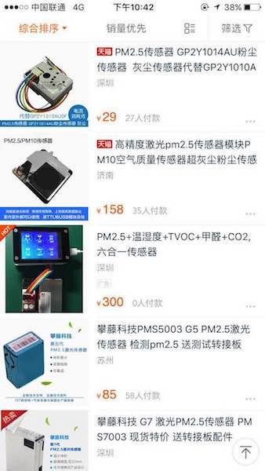
只关注PM2.5的传感器，可以看到这里有两款传感器，一个是158的，一个是85的。这两款其实我都用过，两者测出来的数据都差不多，不过第一个保留到小数点儿后一位，第二个只保留到整数。
其实必要精确到小数点后面一位，所以使用第二种传感器就好了，也就是说一个PM2.5传感器只需要不到100块钱。而PM2.5的传感器都是通过串口传输数据的，所以只要搭配几十块钱或者几块钱的配件就可以DIY一个PM2.5检测仪了，成本低不止一倍！
这里我主要想到了三种制作方案。
实行方案
方案一：电脑显示
使用usb转ttl串口线将数据传送到电脑上，通过上位机显示。
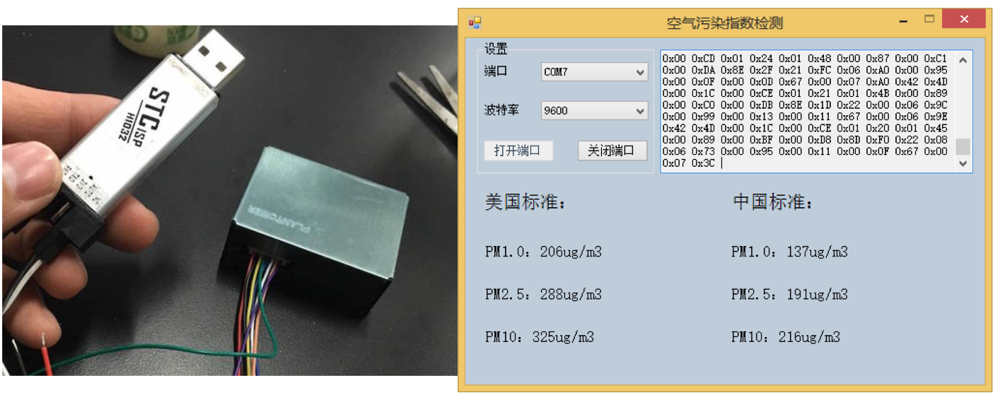
材料费用：
- USB转ttl：5元
- 运费：8元
- 总价：约113元
方案二：手机显示
使用蓝牙将传感器数据转发给手机，通过手机软件显示。
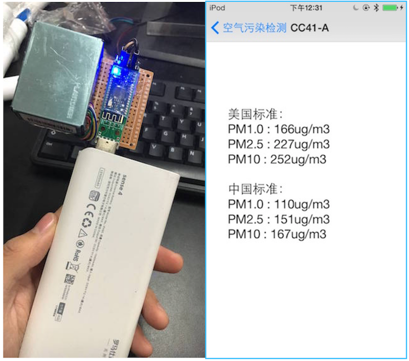
材料费用：
- USB转ttl：5元（用于测试传感器）
- 蓝牙4.0模块：20元
- 运费：8元
- 总价：约133元
方案三：显示屏显示
编写单片机代码，读取串口数据，将数据显示在显示屏上。
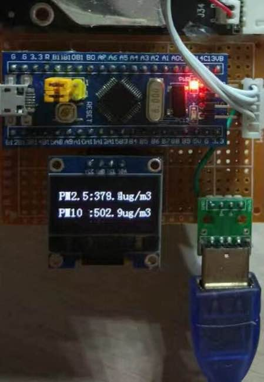
材料费用：
- USB转ttl：5元（用于测试传感器）
- 单片机：16元
- OLED显示屏：23元
- 运费：8元
- 总价：约152元
硬件准备
这里主要介绍第二种方案。第一种方案需要有电脑才能用，不算方便，并且在第二种方案中也会使用电脑进行测试；而第三种方案需要开发单片机的程序，有点麻烦了。
传感器选择
攀藤G5、G7或者G10，价格在80-105之间。这里看个人喜好了，系列越高，体积越小，价格也会贵10块钱左右。
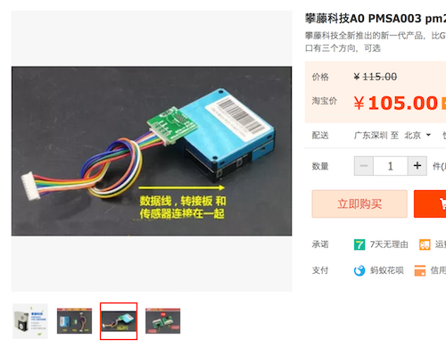攀藤G5S，包括攀藤G5的功能以外，还可以测量甲醛，价格为200左右。如果想再测个甲醛，就可以买G5S的，不过体积比G7、G10要大很多。
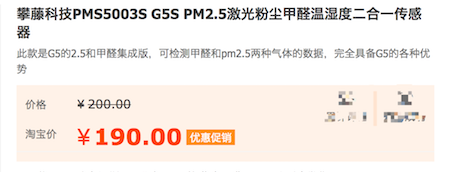
其他配件
USB转ttl，可选CH340、PL2303、CP2102等。
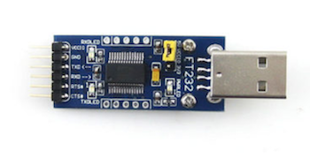蓝牙模块：选择CC2541蓝牙4.0模块，安卓和iOS通用。
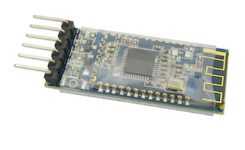母对母杜邦线
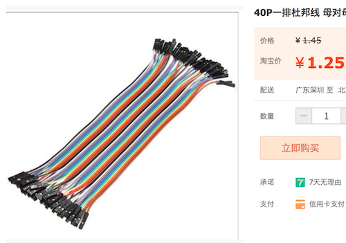电源扩展+电源线
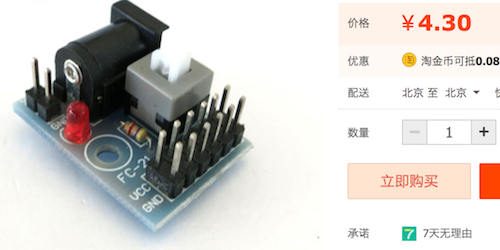
测试传感器
连接硬件
这里首先先测试一下传感器是否正常工作，需要USB转ttl，传感器，以及三根杜邦线。（这里使用Windows电脑进行测试）
其中两者的VCC与VCC相连接，GND与GND相连接，用作供电。第三根线，将传感器的TXD连接到USB转TTL的RXD上，传感器作为一个数据产生者需要通过发送端(TXD)将字节数据发送出去，而USB转TTL通过接收端(RXD)接受传送过来的数据，并通过USB传送到电脑上。
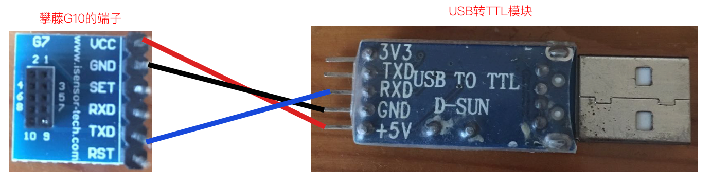
连接好之后，就可以插到电脑的USB口上了。
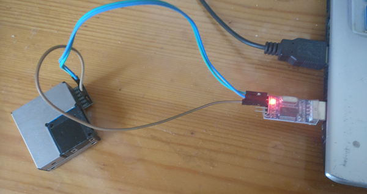
安装驱动
将USB插到电脑上后，打开控制面板中的设备管理器，可以看到端口中没有我们串口设备。
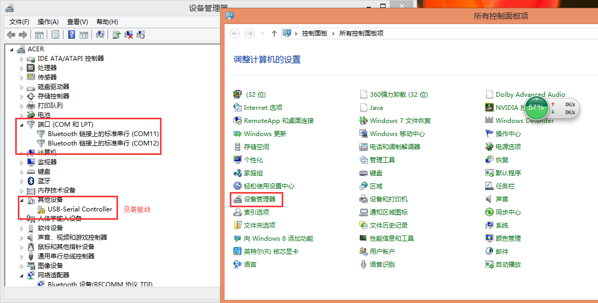
我们需要到网上下载相应的驱动（找淘宝卖家要也可以）。
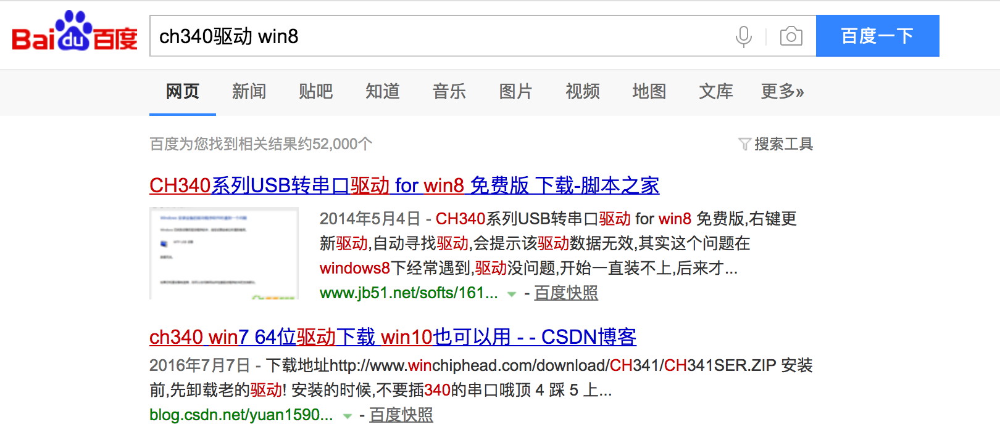
有了驱动以后，安装到电脑中，重启一下，再次打开设备管理器。可以看到这里显示出了我们的USB转TTL设备。
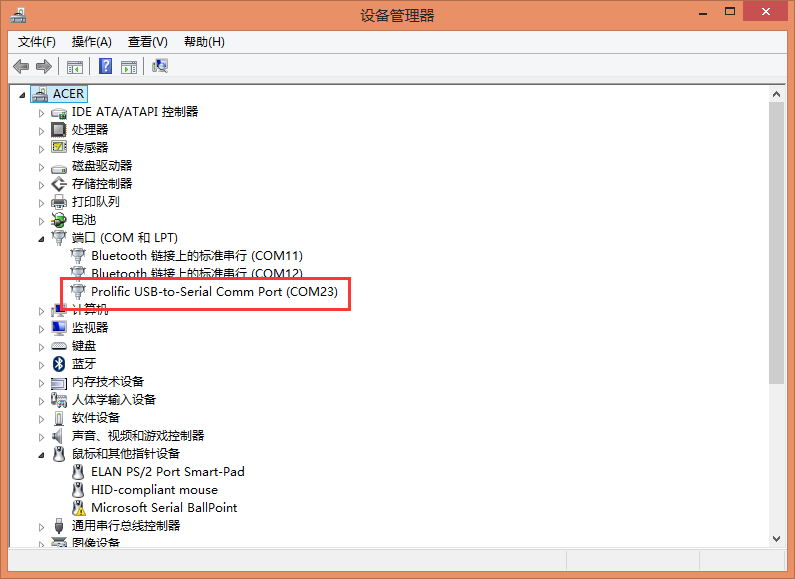
测试传感器
接下来，首先下载一个串口调试助手，查看传感器发送的数据，附上链接：https://raw.githubusercontent.com/nladuo/ElectronicDIY/master/04-PM2.5%E6%A3%80%E6%B5%8B%E4%BB%AA2.0/sscom32.exe。
打开串口调试助手后，选择刚刚在设备管理器看到的端口（我这里是COM23），并选择HEX显示，最后打开串口。
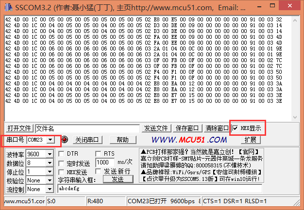
如果你能成功看到显示的一串一串以42 4D 00 1C开始的数据，就说明传感器是好的。
计算一下当前的PM2.5值
首先，看一下数据的说明。
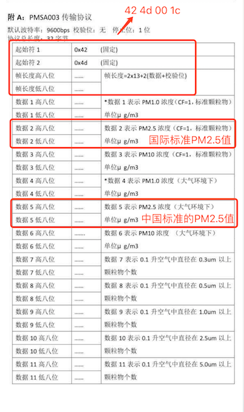
可以看到前四位都是不变的，也就是42 4D 00 1C，然后第7、第8位代表国际标准的PM2.5值的高位和低位，第13、第14位代表我国标准的PM2.5值的高位和低位。最后计算结果就是高位x256+低位就好了。
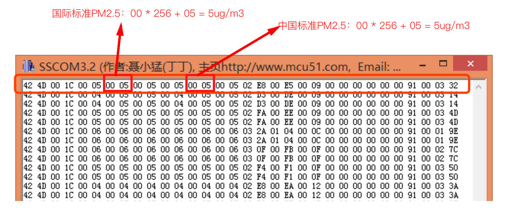
（可以看到当前空气质量还是不错的，适合外出锻炼。）
连接蓝牙与电源
测试完之后，我们开始连接蓝牙和电源。
这里蓝牙和传感器模块都需要电源，所以需要一个电源扩展模块，各自连接一下电源，需要四根杜邦线。数据的传输和上面的差不多，将传感器的TXD端连接到蓝牙4.0模块的RXD端就好了，只需要一根杜邦线。
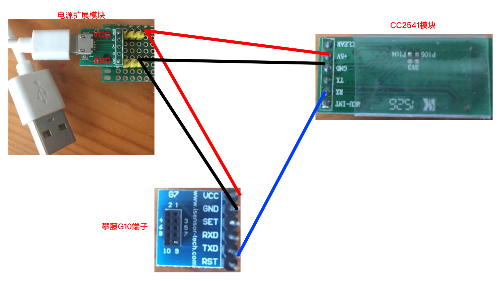
最后，我是拿胶条一粘，固定一下。
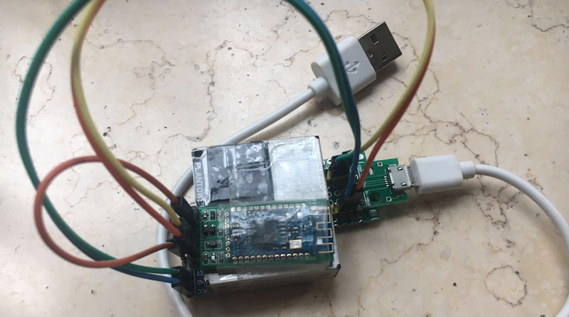
测试小程序
下载小程序
大学的时候，我就喜欢写个安卓的APP，再写个iOS的APP，然后连上单片机传数据玩儿。不过随着年龄的增长，爱玩儿的心还是收了收，能少写点儿就少写点儿把。
感觉小程序的出现算是解决了这个问题吧，平时自己写来玩儿的东西说是一个APP还是太大了。安卓倒是还好，还算开放；苹果的真要发布出去还要认证，而且还得每年交钱。
这里不多说了，下面是小程序的小程序码，扫一扫即可安装（如果有变化的话，我会在博客更新）。
代码的话这里就不说了，第一次写小程序。源码放在了：https://github.com/nladuo/ElectronicDIY/tree/master/04-PM2.5%E6%A3%80%E6%B5%8B%E4%BB%AA2.0/pm25-%E5%B0%8F%E7%A8%8B%E5%BA%8F
小程序的使用
下面我们打开小程序，这里为了让界面不是很空旷，获取了一下用户的头像。然后就是用户的配置，如果用的是攀藤G5S把甲醛的选项勾上就好了。
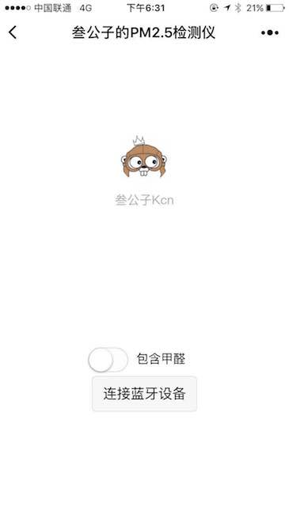
然后，插上我们的设备，可以看到蓝牙上面的灯在闪烁，这说明蓝牙还没配对。
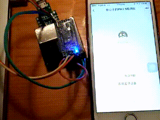
接下来，点击连接蓝牙设备按钮，进入扫描设备界面，这里选择蓝牙设备。（我这里之前是改过名字，选择了BLE_RGB_LED这个）。
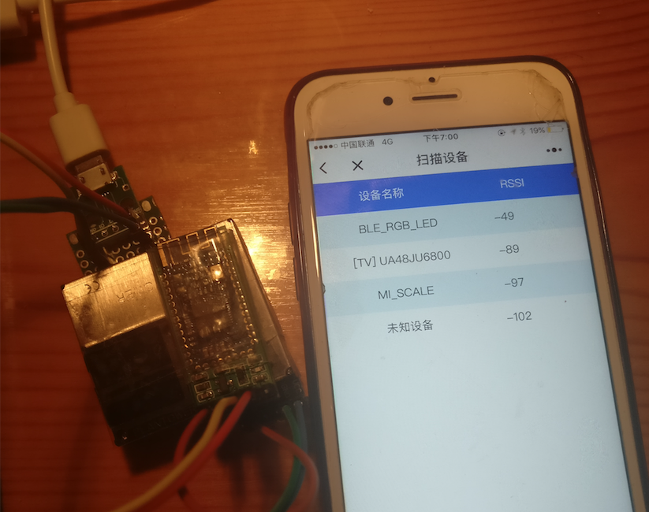
点击了设备名称后，等待片刻，就可以看到正常显示出来PM2.5、PM10的值了。
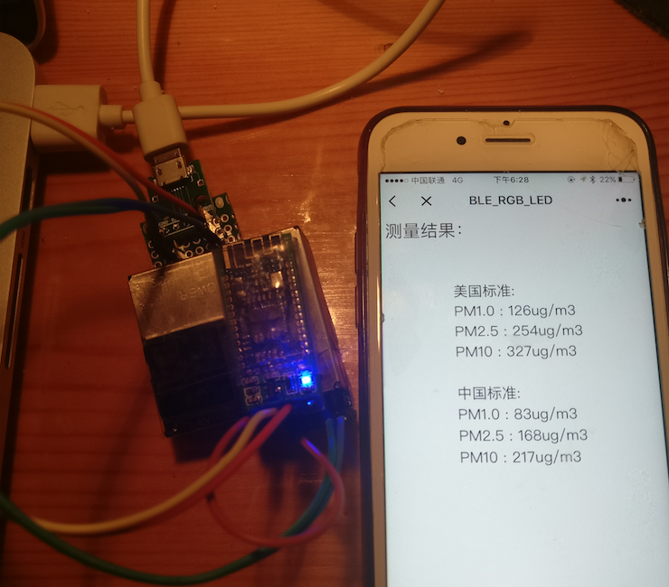
可以看到这里PM2.5的值有一两百，倒不是因为空气不太好，主要是写这篇文章的时候笔者的妈妈正在做饭，搞了一堆油烟出来，于是就变成这样了。